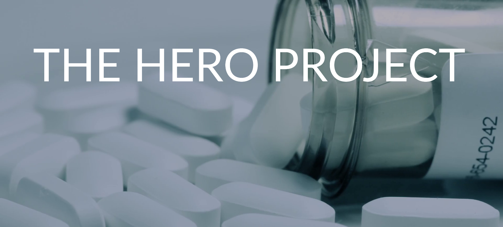

The chance of surviving an overdose depends on how fast one receives medical assistance. Most deaths actually occur one to three hours after the victim has initially ingested or injected drugs.
Street heroin is rarely pure and may range from a white to dark brown powder of varying consistency due to the impurities remaining from the manufacturing process and/or the presence of additional substances.